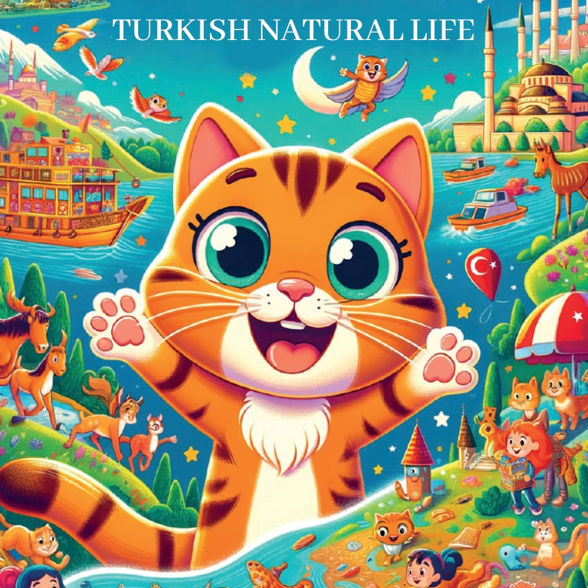
1

2

3
Имаше некогаш едно едно малко дете котка по име Карамел која сакаше да истражува чудесата на природата. Еден ден, таа реши да открие разновидните теренски слики и дивите животни на Турција.
4
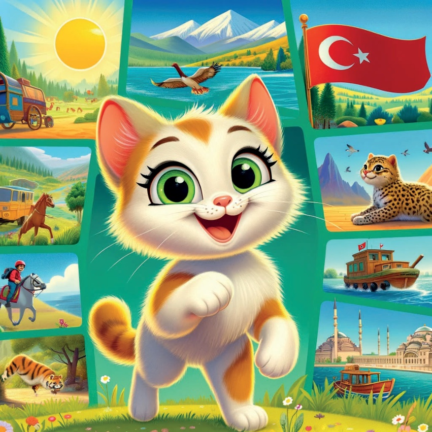
5
Регион Мармара - Истанбул:
Босфорус и Лапи
Првата аница на Карамел беше Истанбул,
каде што уживаше во убавите пејзажи на
Босфорусот и гледаше
игривите лапи.
6
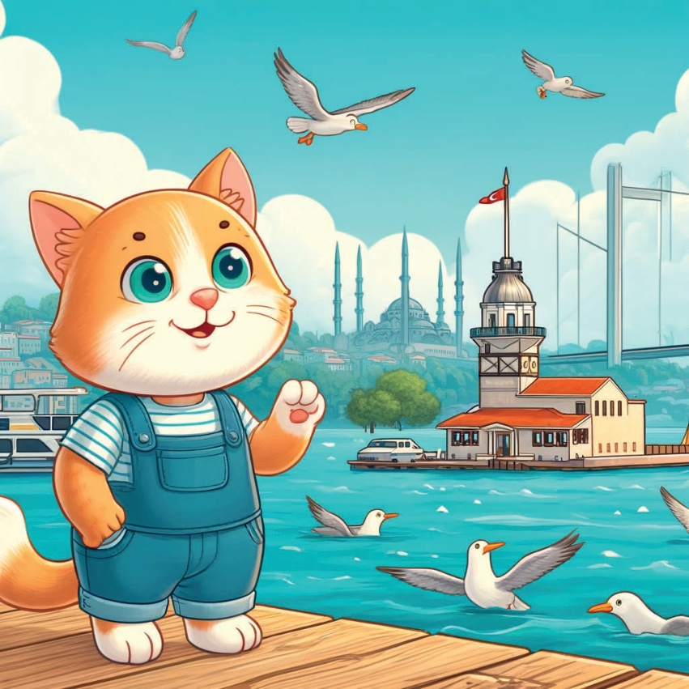
7
Регион Егеј - Измир:
Маслинови насади и морски козهها
Следното, Карамел патува до Измир,
каде што истражи ги општествените маслинови насади
и виде морски козهها како се гнезда на плажите.
8
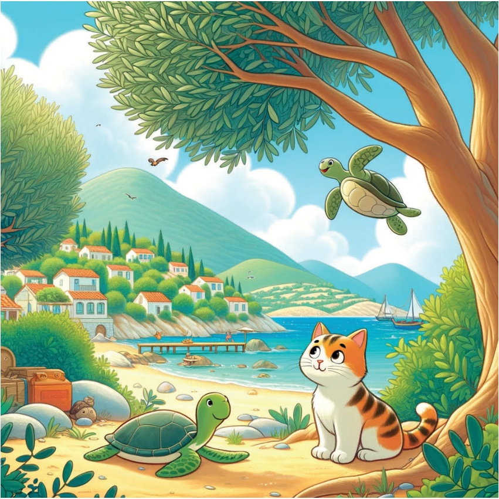
9
Регион Медитерана - Антаल्या:
Водопади Дуден и риби
Во Антаल्या, Карам ел посети
Водопадите Дуден и гледаше
цветните риби како пливаат
во кристалните води.
10
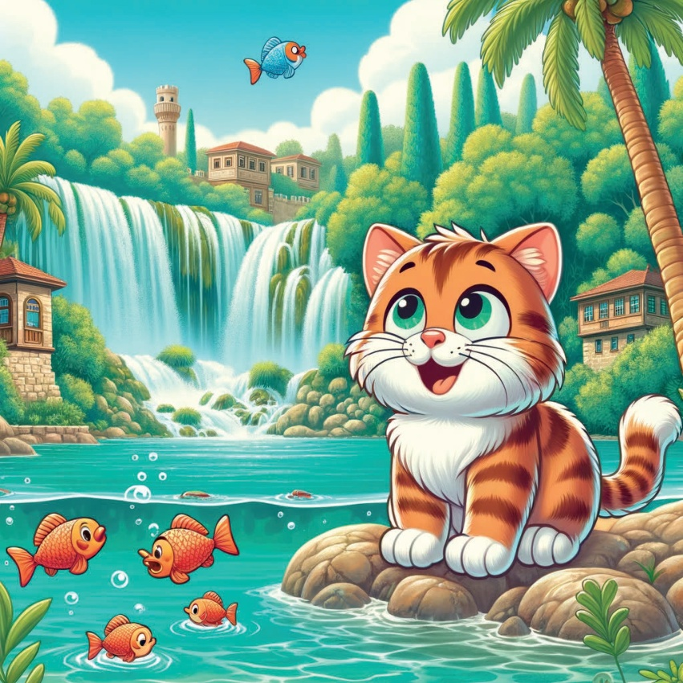
11
Централна Анатолија - Кападокија:
Филички Ценови и Птици
Карамел патува до Кападокија,
каде се восхити од филичките ценови и птиците кои гнездата во
уникатните камења формации.
12
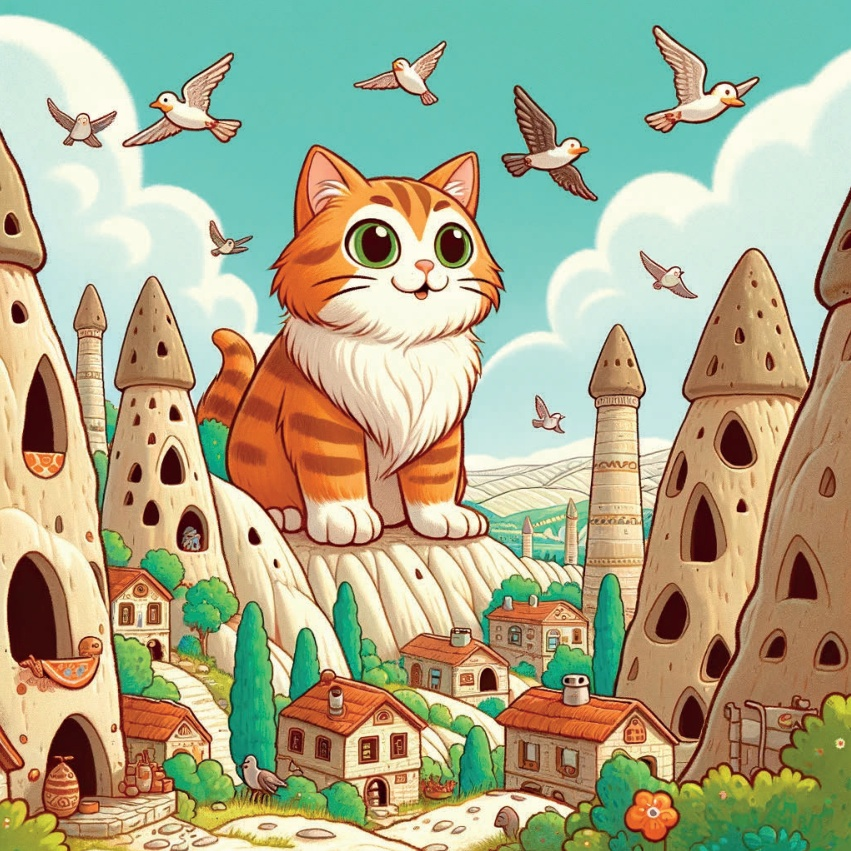
13
Регион Црно Море - Трабзон:
Узунгөл и Водни Птици
Во Трабзон, Карамел посети го Узунгөл,
едно мирно езеро опкружено со воздушни,
и ја погледна водните птици како летат по езерото.
14
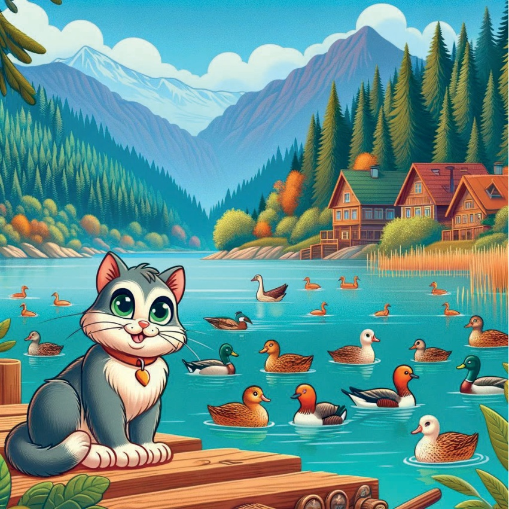
15
Во Источна Анатолија - Планина Агри:
Снежни Псуви и Орли
Во Источна Анатолија, Карамел истражуваше
снежните врвови на Планина Агри
и забележа снежни псуви и моќни орли.
16
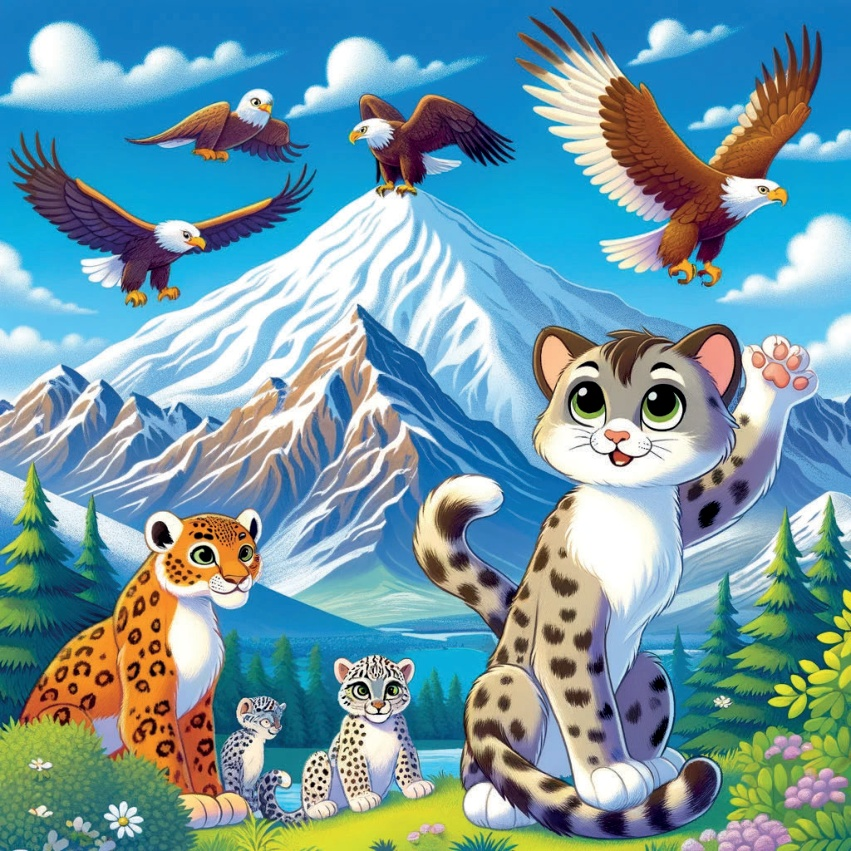
17
Југоисточна Анатолија - Гобекли Тепе:
Древни рушевини и дика
Последното пристаниште на Карамел беше Гобекли Тепе,
каде откри древни рушевини
и забележуваше ја дивата утка која живеела
во областа.
18
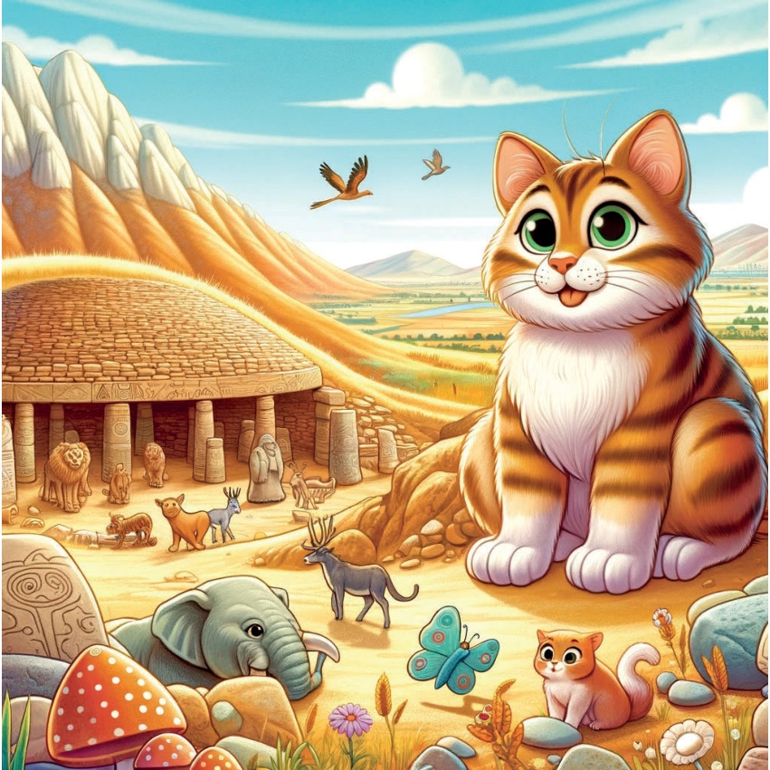
19
Со срце исполнето оддих и чудесници,
Карамел се издари за колку е различна
и прекрасна природата и дивата природа на Турција.
Се врати дома,
се сонувајќи за нејзината следни авантура.
20
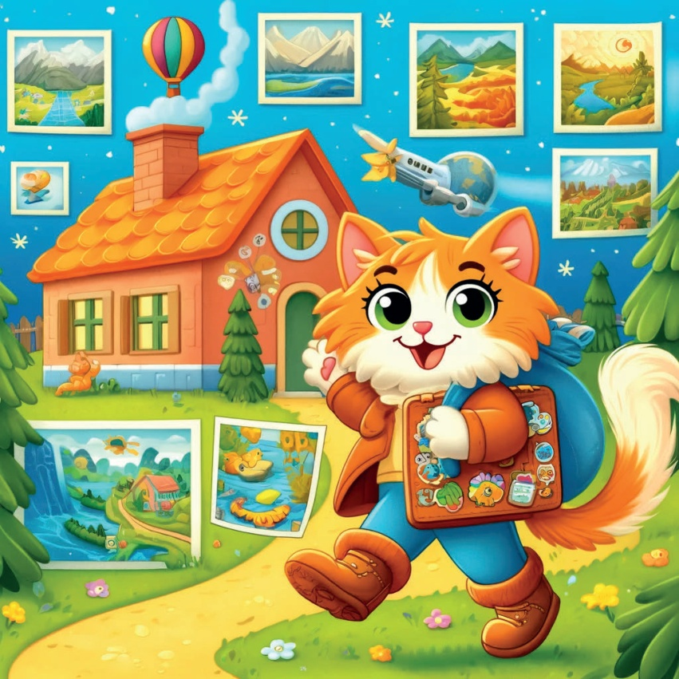
21
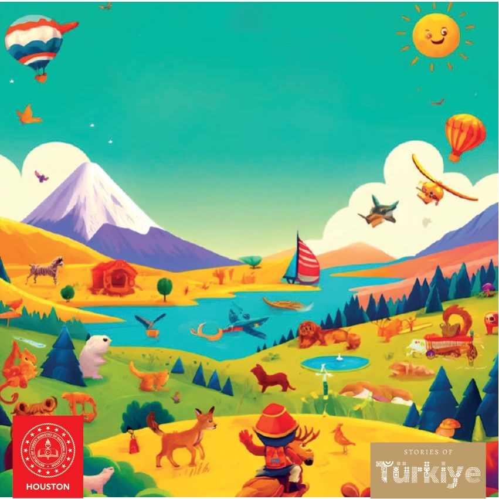
22